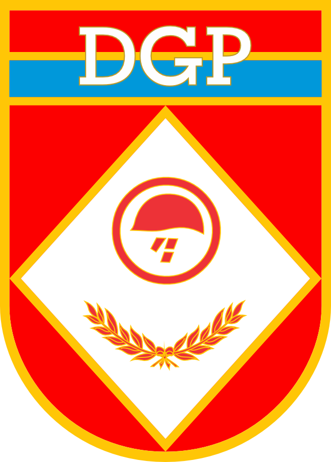

Ferramenta de Concessão da Pensão Militar
Cálculo e Distribuição da Pensão Militar
Cadastro dos Requerentes da Pensão Militar
Documentos Obrigatórios para Concessão da Pensão Militar
Em breve você poderá visualizar e baixar os documentos gerados automaticamente.